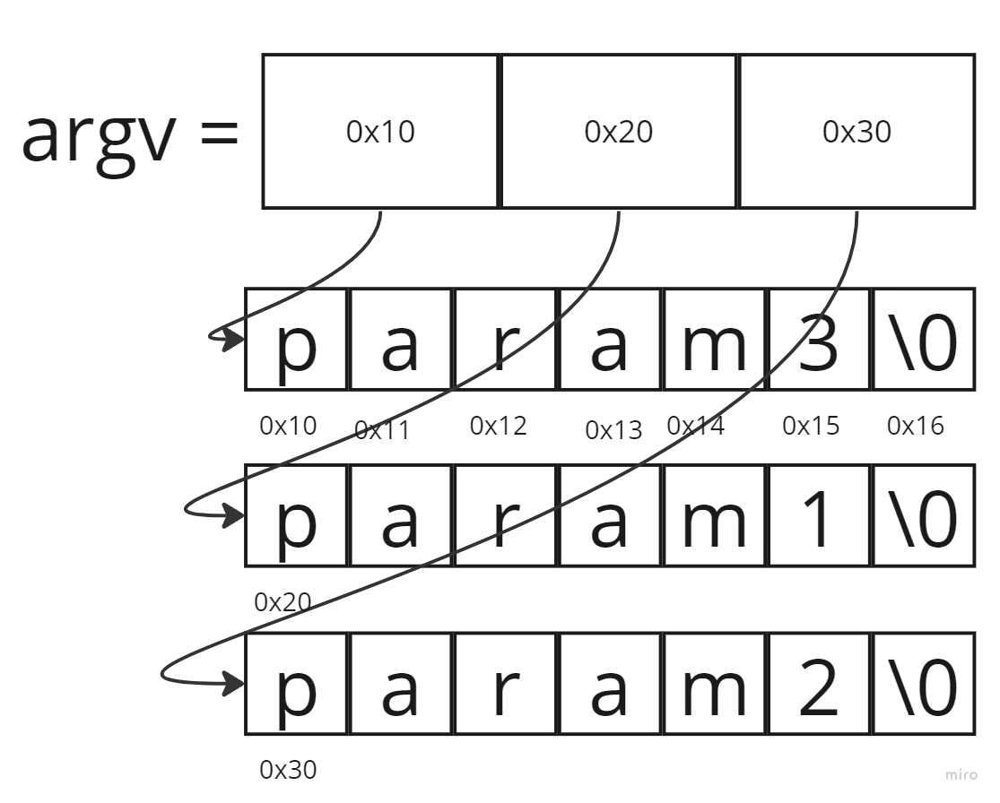
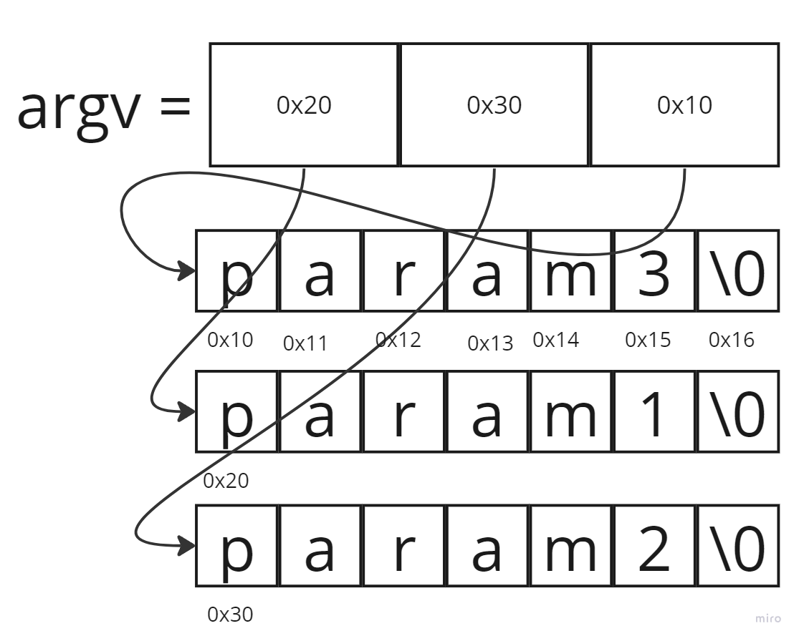

Neste post eu vou falar sobre o exercício ft_sort_params que fiz durante a lista basecamp reloaded, uma espécie de revisão/nivelamento logo antes do início da formação na 42sp. Nele há uma manipulação de ponteiros que achei muito interessante e digna de nota.
O enunciado
O enunciado é muito simples: escreva um programa que imprima na tela, in ascii order, os argumentos passados quando o programa é passado.
A ‘minha’ solução (que aprendi com colegas)
#include <unistd.h>
void ft_putstr(char *str);
void ft_print_params(int argc, char *argv[]);
int ft_strcmp(char *s1, char *s2);
void ft_swap(char **param1, char **param2);
void ft_sort_params(int argc, char *argv[]);
void ft_putchar(char c);
void ft_putstr(char *str)
{
while (*str != '\0')
{
ft_putchar(*str);
str++;
}
}
int ft_strcmp(char *s1, char *s2)
{
int i;
i = 0;
while (s1[i] != '\0')
{
if (s1[i] != s2[i])
return (s1[i] - s2[i]);
i++;
}
return (s1[i] - s2[i]);
}
void ft_swap(char **p1_addr, char **p2_addr)
{
char *tmp;
tmp = *p1_addr;
*p1_addr = *p2_addr;
*p2_addr = tmp;
}
void ft_sort_params(int argc, char *argv[])
{
int i;
int j;
i = 1;
while (i < argc)
{
j = i +1;
while (j < argc)
{
if (ft_strcmp(argv[i], argv[j]) > 0)
ft_swap(&argv[i], &argv[j]);
j++;
}
i++;
}
}
int main(int argc, char *argv[])
{
int i;
if (argc < 2)
return (0);
else
{
ft_sort_params(argc, argv);
i = 1;
while (i < argc)
{
ft_putstr(argv[i]);
ft_putchar('\n');
i++;
}
}
return (1);
}
Em resumo, o que a solução faz é o seguinte: itera ao longo do vetor argv comparando cada elemento (string) com todos os outros. Se uma string é “maior” que a outra (in a ascii sense), então trocamos a posição destes elementos. O mais interessante disso tudo é que, embora estejamos fazendo comparações de strings, para printá-las em ordem, nós não precisamos manipular qualquer conteúdo destas strings. Explorar essa mecânica de modo visual é mais intuitivo para que entendamos.
Suponha que chamamos nosso programa com o seguinte comando: ./ft_sort_params param3 param1 param2. O programa deve retornar os parâmetros ordenados, ou seja: param1 param2 param3, cada um em uma linha.
Inicialmente temos a seguinte situação:

argv contém apenas os endereços (ponteiros) para o primeiro elemento de cada uma das strings que guardam os caracters que compõem o nome dos parâmetros passados. A função ft_sort_params, após comparar as strings, chama ft_swap quando necessário. Esta última função apenas faz a troca dos elementos de argv, sem jamais manipular qualquer elemento das strings com o nome dos parâmetros. Visualmente, após o sorting temos a seguinte situação:

Ou seja, modificamos argv sem modificar as strings e, com isso, ordenamos os parâmetros passados.
pretty neat, huh?